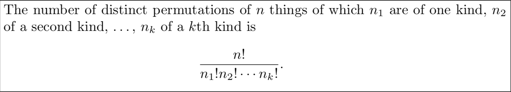

We use the multiplication rule whenever we have multiple "moving parts" but they combine to form one outcome.
For example, you are going to a party and have narrowed down your clothing to 4 shirts, 3 pants, 2 pairs of shoes, and 2 hats. You can only wear one of each to the party. How many different ensembles can you create?
You get the gist.
We care about permutations when we are concerned about the order of our sample or subsample.
For example, that T/F quantum physics quiz I gave you yesterday in which you completely guessed the answers to four distinct questions.
We figured out via the multiplication rule that there were 16 different ways to guess...that is
16 different permutations of 4 T's and F's.
Picture yourself holding an urn containing two marbles: a green and a red.
As a teacher though I had a different problem when I was making your quiz..."do I pick the entanglement question to be the first or the last? what about the particle spin question?!"
How many passwords of length 5 can you make using the letters of the alphabet, if:
Another idea we should be aware of when dealing with permutations is non uniqueness, such as permuting the letters of the word "statistics".
This is a different case then the previous ones, since if we were to put labeled marbles in a bag, there would be one for $s_1$, one for $s_2$, one for $s_3$, ... that is, the bag would have all the repeats as if they were distinct.
However, when we draw a marble labeled $s_2$, we smudge out the subscript and treat it like an indistinguishable $s$.
That is, the anagram $s_1s_3s_2t_3a_1c_1i_2t_1i_1t_2$ is indistinguishable from the anagram $s_3s_1s_2t_2a_1c_1i_1t_1i_2t_3$.
Both spell out "ssstacitit".
Any ideas how we would count all the permutations for anagrams of the word "statistics"?
In general:
If you want to arrange $n$ objects in a circle, then there are $(n-1)!$ ways to do it. This is because you can rotate the circle $n$ times and it is still the same circle.
Combinations are like permutations when order does not matter. The question it answers is: "In how many ways can I make a subset of the elements of a given set?"
It is like you have a bag with $n$ marbles and you want to draw $r$ of them to put in another bag.
$${n \choose r} = \frac{n!}{r!(n-r)!}$$
Informally, the probability of an event is a number between 0 and 1 such that:
Question: Discuss examples of events that have $P=0$ (practically impossible) and events that have $P=1$ (definitely will happen as far as we can understand reality).
We assign the probability number via the ratio between the number of ways the event can happen and the total size of the sample space.
That is, let $A$ be the event we are interested in (say drawing a Jack, a Queen and a King from a deck of 52 shuffled cards) and let $S$ denote the sample space (all possible shufflings of 52 cards), then:
$$P(A) = \frac{n(A)}{n(S)}$$ - where $P(.)$ denotes "the probability of" and $n(.)$ denotes "number of points in the set."
Question: What is the probability of drawing a Jack, a Queen and a King from any suit (order does not matter) from a shuffled deck of 52 cards?